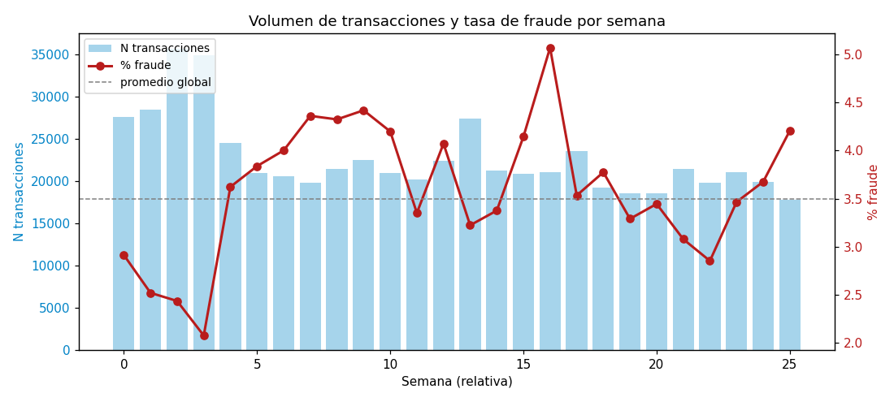
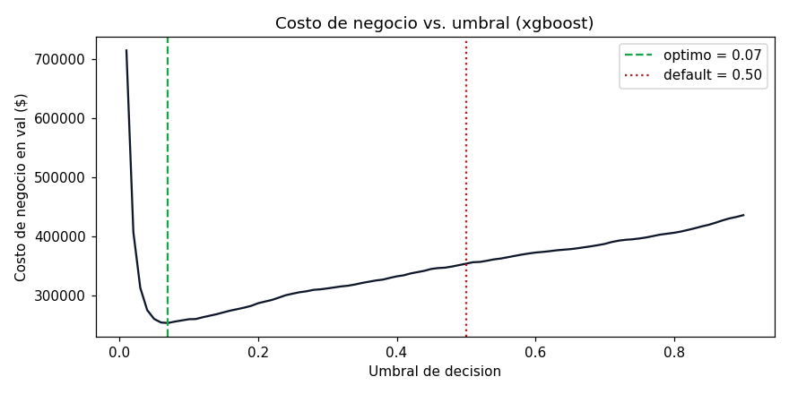
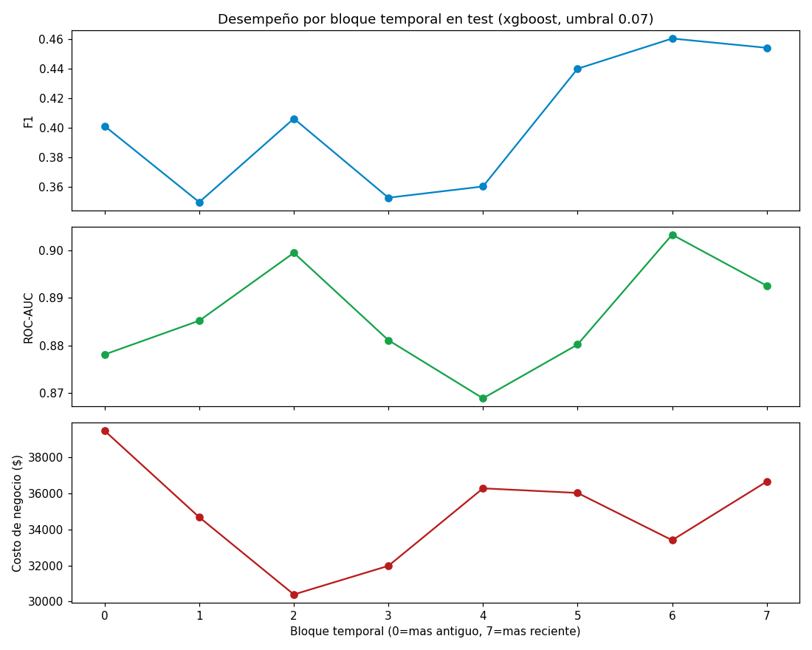
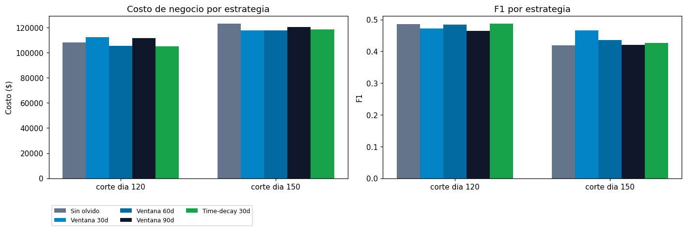
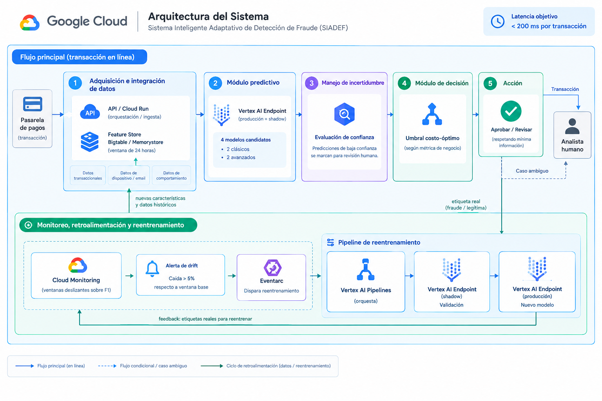

Caso de uso: detección de fraude financiero en e-commerce
Dataset: IEEE-CIS Fraud Detection (Kaggle) · 590,540 transacciones · 26 semanas
El fraude en comercio electrónico genera pérdidas superiores a $48 mil millones anuales a nivel global y más de $10 mil millones en EE.UU. (FTC, Merchant Savvy). Abarca pérdidas directas de capital y costos por fricción operativa al bloquear compras legítimas.
Los patrones de compra y los métodos de ataque no son estáticos: aparecen nuevas tecnologías de pago, el comportamiento cambia con las estaciones y los estafadores se adaptan constantemente. Un modelo entrenado una sola vez pierde efectividad poco a poco.
IEEE-CIS combina cambios graduales en los hábitos de consumo con cambios bruscos por campañas de fraude nuevas, sobre un dataset con muchas variables y clases muy desbalanceadas (3.499% de fraude).
Proponemos SIADEF, un sistema inteligente adaptativo de detección de fraude, capaz de evaluar su propio desempeño en el tiempo y adaptarse a los cambios en el comportamiento de los datos.
Implementar SIADEF, un sistema de detección de fraude transaccional para e-commerce que pueda evaluar su propio desempeño en el tiempo y adaptarse a los cambios en el comportamiento de los datos.
Inferencia inferior a 200 ms por transacción, para no interrumpir el flujo de aprobación de la pasarela de pagos.
Respaldado en literatura sobre detección de fraude en tiempo real (Borketey & Borketey, 2024) y estándares industriales de latencia para APIs críticas.
SIADEF solo puede usar los atributos que entregan normalmente las pasarelas estándar, sin garantía de tener siempre datos de identidad completos. El dataset ya viene anonimizado por Kaggle, sin PII directa.
Ninguna decisión ni reentrenamiento puede usar información de periodos posteriores al evento que se está evaluando.
Las fuentes de datos (transaccionales, de dispositivo/email y de comportamiento del comprador) se integran en una capa de features unificada. El módulo predictivo genera un score de fraude que pasa por manejo de incertidumbre: los casos de alta confianza se resuelven automáticamente y los ambiguos se marcan para revisión humana. El módulo de decisión aplica el umbral costo-óptimo y el componente de acción ejecuta la respuesta, retroalimentando etiquetas reales que, junto al monitor de drift, disparan el reentrenamiento.
F1-Score y ROC-AUC como métricas principales, acompañadas de precisión y recall.
Un modelo "rinde bien" si su ROC-AUC ≥ 0.90, umbral que la literatura de industria sugiere para bloqueo automatizado (Bronsdon, 2025). Latencia < 200 ms como métrica aparte.
Balance económico entre pérdidas omitidas y costos de fricción manual.
Equidad de falsos positivos por rango de monto: detectar si el modelo bloquea de forma desproporcionada algún rango de monto en particular.
Resultado real en Slide 10 — la hipótesis inicial no se confirmó.

La tasa de fraude oscila entre 2.07% y 5.07% semanal, y tiende a subir hacia el final del periodo: no es estacionaria.
Patrón horario marcado: la tasa de fraude sube fuerte entre las 5am y 9am, con pico de 10.6%.
ProductCD cambia de mix (categoría "W": 70%→80%) y la cobertura de identity cae de 54% a 15-26% tras la semana 3.
| Modelo | F1 | ROC-AUC | Costo |
|---|---|---|---|
| Regresión Log. | 0.239 | 0.851 | $452,265 |
| Random Forest | 0.370 | 0.888 | $317,595 |
| LightGBM | 0.415 | 0.917 | $275,100 |
| XGBoost | 0.515 | 0.921 | $354,510 |

| Cuartil | Rango ($) | FPR |
|---|---|---|
| Q1 bajo | 0.25 – 42.95 | 4.21% |
| Q2 | 42.96 – 67.95 | 2.65% |
| Q3 | 67.96 – 117.00 | 3.40% |
| Q4 alto | 117.22 – 1656.11 | 6.68% |
FPR global: 4.21%

Evaluando una sola vez sobre test: F1 baja de 0.495 a 0.406 (-18%), ROC-AUC de 0.921 a 0.886, costo sube de $254,190 a $278,910.
Esa caída supera el umbral de alerta del 5% propuesto para el monitor de drift.
Pero al dividir test en 8 bloques, no hay colapso monótono: sube y baja, se recupera al final. La caída ocurre entre periodos (val→test), no dentro de test.
| Corte (día) | Reg. Log. | Random Forest | LightGBM | XGBoost |
|---|---|---|---|---|
| 60 | 0.840 | 0.879 | 0.905 | 0.919 |
| 90 | 0.827 | 0.867 | 0.898 | 0.901 |
| 120 | 0.845 | 0.884 | 0.925 | 0.921 |
| 150 | 0.826 | 0.874 | 0.910 | 0.908 |

5 estrategias en 2 cortes (día 120, 150): sin olvido, ventanas de 30/60/90 días, y time-decay (vida media 30d).
Gama et al. (2014) y Dal Pozzolo et al. (2018) sobre ventana móvil en detección de fraude no estacionaria.

Microservicio de inferencia en Cloud Run + feature store en Bigtable/Memorystore (<200ms) · modelo en Vertex AI Endpoint con validación shadow antes de producción · Cloud Monitoring + Eventarc disparan reentrenamiento en Vertex AI Pipelines · datos reales requerirían tokenización PCI-DSS.
Confirmado con datos reales, no solo con hipótesis: tasa de fraude, mix de ProductCD y cobertura de identity cambian con el tiempo.
28.3% de ahorro en costo de negocio, evidencia concreta de por qué separar la selección de modelo del umbral de decisión.
Alguna forma de olvido siempre supera a no olvidar nada, aunque el tamaño óptimo de ventana cambia con el tiempo: exige monitoreo constante, no una política estática.
Tanto la métrica social como la comparación multi-periodo dieron resultados distintos a la hipótesis inicial (riesgo en monto alto, empate técnico XGBoost/LightGBM). Reportamos ambos hallazgos tal cual salieron.